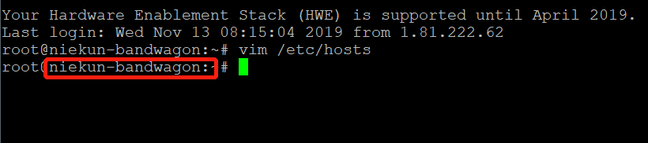

cat 命令 in Linux
cat 是 Linux 下常用的一个命令。主要功能是：显示文件内容/新建文件/合并文件
cat 是 Linux 下常用的一个命令。主要功能是：显示文件内容/新建文件/合并文件
Linux内核（英语：Linux kernel），是一种开源的类Unix操作系统宏内核。
如果你在安装新硬件后遇到：网卡不能使用，亮度不能调节，触摸板不能识别，蓝牙不能使用等等，这些关系都和linux的内核有关系。Kernel 是 Linux 系统的核心，主要负责硬件的支持。Linux 内核提供了安全补丁，bugfix 和新特性。
参考链接：
https://linux.cn/article-10103-1.html
https://www.cyberciti.biz/faq/installing-latest-stable-mainline-linux-kernel-on-ubuntu-with-apt-get/
Ubuntu 不同版本系统支持内核情况：https://wiki.ubuntu.com/Kernel/Support
当需要输入一段很长的命令时，为了书写或查看方便，可以对命令分割换行处理，使用换行符 \
例如：
sudo apt-get install --install-recommends -y \
linux-generic-lts-xenial等价于：
sudo apt-get install --install-recommends -y linux-generic-lts-xenialLinux 系统默认的变量 $hostname 值为 localhost.localdomain, 想要自定义的话需要修改对应文件。
打开文件 /etc/hostname 编辑内容为你想要修改的名字。
打开文件 /etc/hosts 编辑 127.0.1.1 后的值为你想要的字符。此设置影响命令行头部的描述：

此脚本转载自 秋水逸冰 博客：https://teddysun.com/469.html
需要用到的工具：
Linux
MySQL
openssl
gdrive
crontab
脚本实现定时自动备份数据库及指定目录文件夹，备份文件加密处理，自动上传到google drive。可设定备份文件保留天数。